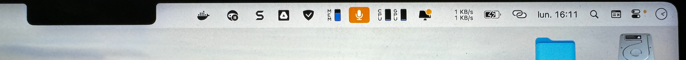

Cacher le notch des MacBook Pro pour voir toutes ses icônes dans la barre des menus
J’ai un problème qui m’embête depuis un bon moment sur mon MacBook Pro : le fait que mes icônes de la barre de menu soient cachées derrière le notch.
Je suis un utilisateur de iStat Menus qui me permet d’afficher des informations supplémentaires dans ma barre de menu. C’est une application très pratique, mais avec toutes les autres applications que j’utilise qui ajoutent des icônes dans la barre des menus, je me retrouve à en avoir trop, et elles se retrouvent cachées derrière le « notch », cet espace noir au milieu de la barre de menu qui cache la caméra.
Je me retrouve à devoir déplacer des icônes dans cet espace noir jusqu’à trouver celle qui m’intéresse. 
Aujourd’hui, j’en ai eu marre !
Alfred.app, le début d’une solution pour cacher/afficher le notch
J’ai trouvé la solution sur cet article. Minakoto, de son pseudo, a créé un workflow sur Alfred qui utilise un autre petit logiciel capable d’afficher ou de cacher le fameux notch.
Alfred, quel est cet outil puissant sur macOS ?
Alfred est une application populaire pour macOS qui améliore considérablement la productivité des utilisateurs grâce à ses fonctionnalités de lancement d’applications, de recherche, et d’automatisation. Conçue comme une alternative plus puissante au Spotlight d’Apple, Alfred permet aux utilisateurs de contrôler leur Mac avec des raccourcis clavier, des scripts, et des flux de travail personnalisés.
Fonctionnalités principales d’Alfred :
- Lancement d’applications et recherche rapide : Alfred permet de lancer rapidement des applications, d’ouvrir des fichiers, et d’effectuer des recherches sur le web ou dans le système de fichiers. Il suffit de taper quelques lettres pour voir apparaître les résultats.
- Clips et snippets : Alfred stocke un historique de vos copier-coller (clipboard) et permet de créer des « snippets », des morceaux de texte réutilisables, que vous pouvez insérer à tout moment.
- Workflows : C’est l’une des fonctionnalités les plus puissantes d’Alfred. Les workflows permettent d’automatiser des tâches complexes en combinant plusieurs actions, comme lancer une application, envoyer un e-mail avec un modèle prédéfini, ou même interagir avec des services web via des API. Ces workflows peuvent être partagés et téléchargés depuis la communauté Alfred.
- Recherche sur le web et calculs : En plus de la recherche locale, Alfred permet d’effectuer des recherches personnalisées sur le web, et d’exécuter des calculs rapides sans quitter l’interface.
- Intégration avec d’autres services : Alfred s’intègre bien avec d’autres services et applications comme 1Password pour la gestion des mots de passe, ou encore les lecteurs de musique comme Spotify, permettant ainsi de contrôler facilement votre musique sans quitter votre flux de travail.
- Thèmes et personnalisation : Vous pouvez personnaliser l’apparence et le comportement d’Alfred pour qu’il corresponde parfaitement à vos préférences, que ce soit au niveau des couleurs, des polices, ou des raccourcis clavier.
En résumé, Alfred est un outil polyvalent qui aide les utilisateurs de macOS à accomplir plus de tâches plus rapidement et plus efficacement. Grâce à sa grande flexibilité et à ses nombreuses options de personnalisation, Alfred est devenu un incontournable pour ceux qui cherchent à optimiser leur expérience utilisateur sur Mac.
Say No To Notch, application pour cacher ou afficher le notch des MacBook
Grâce aux workflows, il est possible d’automatiser certaines actions sur le Mac ! Rien de plus simple dans notre situation, il suffit de télécharger le workflow Alfred créé par Minakoto ici et de double-cliquer dessus pour l’installer. Le raccourci pour lancer le workflow est simplement d’ouvrir la barre de recherche Alfred et d’écrire « tn ».
S’il ne vous propose pas d’installer l’application pour afficher/cacher le notch et le raccourci Apple correspondant comme ce fut dans mon cas, voici comment faire.
- Téléchargez l’application Say No To Notch
- Téléchargez le raccourci Apple
Double-cliquez sur les deux fichiers que vous venez de télécharger pour les installer.
Ouvrez les réglages d’Alfred et allez dans le menu Workflows, puis Toggle Notch.

Double-cliquez sur le carré avec la baguette magique pour installer les Automations Tasks si ce n’est pas déjà fait.
Une fois que vous avez fait tout ça, vous devriez pouvoir ouvrir la barre de recherche Alfred et faire la commande « tn ».
Si tout a fonctionné, normalement vous allez voir votre barre des menus descendre en dessous du notch, et vous afficher toutes vos icônes. Pour la remettre en haut comme avant, refaites simplement la même commande !
Raycast Mac, la solution alternative à Alfred.app
Raycast vs Alfred.app
Raycast est une application Mac moderne qui rivalise avec Alfred en tant que lanceur d’applications et gestionnaire de productivité. Elle se distingue par son interface minimaliste, ses intégrations étendues avec des outils comme GitHub et Slack, ainsi que ses fonctionnalités de collaboration en équipe. Raycast permet d’automatiser des tâches via des scripts personnalisés, tout en offrant une expérience utilisateur fluide et rapide, adaptée à ceux qui cherchent à maximiser leur efficacité au quotidien.
Si tu veux en savoir plus, je t’invite à découvrir mon tutoriel complet sur Raycast disponible ici.
Comment cacher/afficher le notch avec Raycast
Pour ceux qui préfèrent utiliser Raycast sur Mac, vous avez de la chance, il existe également une automatisation, légèrement différente, mais qui arrive au même résultat.
- Installez l’application zNotch directement sur le Mac App Store ou avec Homebrew
- Installez l’extension Manage Macbook’s Notch sur Raycast
Pour cacher/afficher le notch, ouvrez votre barre de recherche Raycast et tapez « manage notch ».

J’espère que ce tutoriel vous aura été utile, à bientôt !
Passionné(e) par l’IA et avide d’articles comme celui-ci ? Ne rate pas une miette de l’actu et des astuces sur l’intelligence artificielle.
Rejoins la communauté grandissante de La Minute IA, la newsletter qui fait vibrer des milliers de curieux tech comme toi. Inscris-toi maintenant et plonge dans le futur de l’IA, expliqué simplement, en français !
Si tu préfères les contenus vidéos, je t’invite à t’abonner à ma chaîne YouTube.
Mathieu | IA & SEO sur X (Twitter), LinkedIn
Comments
Comments powered by Disqus